Overview
This report summarizes yield, acreage, and total production estimates for Maize, Rice, Beans across focus countries. The data is updated monthly in the RFBS Dashboard via a standard data file. Our model reports on the main growing season for countries with available historical yield data for model training.
Data Limitations and Model Caveats
The data used in this report has limitations due to gaps in historical records and variations in data collection methods:
- Historical data accuracy and consistency vary by country
- Our model reflects these data gaps, as it is trained on available information
- We view these limitations as opportunities to improve data sharing and scaling methods with our country partners
Current Focus: Data presented this month covers Maize, Rice, Beans systems in United Republic Of Tanzania, Kenya, Zambia, Rwanda, Malawi, which are currently in season.
Note on excluded countries: Uganda is not included in this month's bulletin. This country is currently post-harvest or out of the growing season — once harvesting begins, vegetation indices (NDVI/EVI) are no longer reliable predictors of crop yield and model forecasts are suspended until the next season commences.
Tanzania — Vuli season not covered: This bulletin reports Tanzania's Msimu season only. The Vuli season is currently out of season for February — crops are either pre-planting or post-harvest and satellite-based yield forecasts are not applicable. The Vuli season will be covered in a future bulletin once it becomes active.
Executive Summary
Current projections for February 2026 Beans, Maize, Rice production in Kenya, Malawi, Rwanda, United Republic Of Tanzania, and Zambia show varying forecasts between USDA, FAO, and UMD-XylemLab models, as summarized in the Table and Figure below. For maize, UMD-XylemLab generally projects higher yields and wider production ranges in Malawi (2.75-4.71 million MT) and Zambia (3.0-4.47 million MT) compared to USDA and FAO, which remain closely aligned. Kenya's maize estimates show UMD-XylemLab indicating a broader production range (3.53-6.42 million MT) with a slightly lower yield than USDA and FAO. Rwanda's maize projections by UMD show lower totals (0.3-0.68 million MT) relative to USDA and FAO. Rice production forecasts diverge notably, with UMD-XylemLab presenting significantly lower estimates in Kenya (0.02-0.05 million MT) than USDA and FAO (around 4 million MT), likely reflecting sensitivity to different agro-ecological zones. Malawi and Rwanda show more comparable rice estimates across FAO and UMD, though UMD's ranges remain wider. Beans are solely reported from UMD-XylemLab, revealing stable yet modest production levels across all countries, ranging from 0.04-0.16 million MT in Tanzania to 0.65-1.58 million MT in Kenya. Differences in model geographic scope and seasonal transitions account for variability in forecasts. Overall, the data illustrates both regional stability and model-driven discrepancies, emphasizing the need for integrated approaches to capture diverse production conditions.
All Sources Interactive Chart
All Sources Comparison Table
| Country | Crop | Source | Area (Million ha) | Yield (MT/ha) | Min - Max Production (Million MT) |
|---|---|---|---|---|---|
| Malawi | Maize | USDA | 1.8 | 1.67 | 3.0 |
| FAO | 1.8 | 1.76 | 3.5 | ||
| UMD-XylemLab | 1.83 | 1.94 | 2.75 - 4.71 | ||
| Rice | FAO | 0.07 | 1.6 | 0.12 | |
| UMD-XylemLab | 0.08 | 1.22 | 0.04 - 0.18 | ||
| Beans | UMD-XylemLab | 0.37 | 0.71 | 0.12 - 0.39 | |
| Zambia | Maize | USDA | 1.4 | 2.43 | 3.4 |
| FAO | 1.4 | 2.3 | 3.3 | ||
| UMD-XylemLab | 1.42 | 2.57 | 3.0 - 4.47 | ||
| Rice | FAO | 0.05 | 1.3 | 0.006 | |
| UMD-XylemLab | 0.05 | 1.04 | 0.01 - 0.09 | ||
| Beans | UMD-XylemLab | 0.13 | 0.55 | 0.02 - 0.12 | |
| Kenya | Maize | USDA | 2.3 | 1.91 | 4.4 |
| FAO | 2.4 | 1.76 | 4.28 | ||
| UMD-XylemLab | 2.55 | 1.73 | 3.53 - 6.42 | ||
| Rice | USDA | 0.06 | 5.18 | 4.1 | |
| FAO | 0.04 | 5.8 | 4.05 | ||
| UMD-XylemLab | 0.02 | 2.01 | 0.02 - 0.05 | ||
| Beans | UMD-XylemLab | 1.23 | 0.79 | 0.65 - 1.58 | |
| Rwanda | Maize | USDA | 0.3 | 1.5 | 0.45 |
| FAO | 0.32 | 1.59 | 0.51 | ||
| UMD-XylemLab | 0.32 | 1.47 | 0.3 - 0.68 | ||
| Rice | FAO | 0.03 | 4.1 | 0.13 | |
| UMD-XylemLab | 0.03 | 4.53 | 0.09 - 0.16 | ||
| Beans | UMD-XylemLab | 0.63 | 0.89 | 0.19 - 0.65 | |
| United Republic Of Tanzania | Maize | UMD-XylemLab | 1.13 | 1.31 | 0.83 - 2.03 |
| Rice | UMD-XylemLab | 0.2 | 1.37 | 0.13 - 0.46 | |
| Beans | UMD-XylemLab | 0.16 | 0.71 | 0.04 - 0.16 |
Regional Overview/Conditions
Country Summary
- United Republic Of Tanzania: Bean crop conditions are stable across all surveyed regions with predicted yield anomalies near zero, indicating minimal deviation from average conditions. Iringa, Lindi, and Mtwara show relatively higher predicted yields around 0.84 to 1.07 MgT/ha, while Katavi records the lowest bean yield forecast at 0.31 MgT/ha. Maize conditions are generally stable but show negative predicted yield anomalies across all regions ranging from -0.02 to almost -0.03 in percentage terms, with regions such as Dodoma and Singida reporting lower predicted yields near 0.56 to 0.83 MgT/ha. Rice shows the most significant negative anomalies, especially in coastal regions like Lindi (-10.07%) and Mtwara (-10.99%), coupled with limited production areas, signaling watch conditions though no acute alarms. The yield trends overall remain stable with standard errors indicating moderate uncertainty, especially for rice.
- Kenya: Bean crops show a stable trend across all reporting counties with predicted yield anomalies close to neutral, mostly ranging between -0.12% and +21.86%. Most counties report favorable and stable conditions for beans, except for some arid counties like Kajiado and Tharaka-Nithi showing the highest positive anomalies but with low predicted yields. Maize conditions are stable but largely negative in yield anomalies across most counties, with anomalies ranging from -0.02 to +0.005 and some counties like Kajiado experiencing substantial negative anomalies up to -7.09%. Rice conditions remain stable with negative yield anomalies in all reporting regions except for Vihiga and Nyeri which show improving trends with notable positive anomalies. The highest positive rice trend is +32.88% anomaly in Vihiga, whereas counties like Embu and Nyandarua show sharp negative anomalies. Overall, crops exhibit mostly stable to slightly declining yield anomalies with no alarming extremes in yield except localized stresses noted in maize in Kajiado and rice in some central counties.
- Zambia: Crop conditions for beans are stable across all regions, with small positive predicted yield anomalies ranging from +0.005 to +0.008 and trends marked as stable. Predicted bean yields range from 0.46 MgT/ha in Southern to 0.67 MgT/ha in North-Western province. Maize conditions are stable but show minor negative yield anomalies between -0.005 and -0.014 across regions, with yields varying from 1.32 MgT/ha in Western to 3.4 MgT/ha in Muchinga. Rice is stable generally but exhibits notable negative yield anomalies between -0.074 and -0.105, with yields from 0.75 MgT/ha in Western up to 1.49 MgT/ha in Muchinga, signaling some watchful trends especially in Southern and Western regions due to pronounced declines.
- Rwanda: Crop conditions remain stable across Rwanda for the main crops of beans, maize, and rice. For beans, all five regions including Amajyaruguru, Amajyepfo, Iburasirazuba, Iburengerazuba, and Umujyi Wa Kigali show stable trends with slightly positive predicted yield anomalies ranging from 0.004 to 0.01 MgT/ha, with Umujyi Wa Kigali having the highest predicted yield anomaly percentage of 0.471%. Maize conditions are similarly stable but exhibit slightly negative predicted yield anomalies across all regions, with Umujyi Wa Kigali experiencing the largest negative anomaly at -1.342%. Rice shows mixed anomalies: Iburengerazuba has a strong positive anomaly of 0.533 MgT/ha (10.519%), while Iburasirazuba and Umujyi Wa Kigali show negative anomalies of -0.087 and -0.084 MgT/ha respectively. The significant positive anomaly in rice yield at Iburengerazuba is notable, whereas the consistent negative anomalies for maize and rice in Umujyi Wa Kigali merit close monitoring.
- Malawi: Crop conditions across Malawi remain stable for beans, maize, and rice as of February 2026. Beans show slightly positive yield anomalies in Central (1.046%) and Northern Regions (0.78%) and a smaller positive anomaly (0.3%) in the Southern Region, indicating generally favorable conditions for this crop nationwide with no alarming trends. Maize exhibits slight negative yield anomalies in all regions: Central (-0.607%), Northern (-0.372%), and Southern (-0.347%), but the overall status remains stable without notable stress. Rice displays the most pronounced negative yield anomalies, with Central (-6.464%), Northern (-7.433%), and Southern (-8.488%) Regions all reflecting decreasing yields, suggesting a need for monitoring potential challenges. No extreme adverse conditions are flagged otherwise.
United Republic Of Tanzania
Regional Crop Conditions Summary
Bean crop conditions are stable across all surveyed regions with predicted yield anomalies near zero, indicating minimal deviation from average conditions. Iringa, Lindi, and Mtwara show relatively higher predicted yields around 0.84 to 1.07 MgT/ha, while Katavi records the lowest bean yield forecast at 0.31 MgT/ha. Maize conditions are generally stable but show negative predicted yield anomalies across all regions ranging from -0.02 to almost -0.03 in percentage terms, with regions such as Dodoma and Singida reporting lower predicted yields near 0.56 to 0.83 MgT/ha. Rice shows the most significant negative anomalies, especially in coastal regions like Lindi (-10.07%) and Mtwara (-10.99%), coupled with limited production areas, signaling watch conditions though no acute alarms. The yield trends overall remain stable with standard errors indicating moderate uncertainty, especially for rice.

Figure: Mean Predicted Production with Min/Max – United Republic Of Tanzania (Part 1)
Bar chart showing mean predicted production for maize, beans, and rice with min/max ranges.

Figure: Mean Predicted Production with Min/Max – United Republic Of Tanzania (Part 2)
Bar chart showing mean predicted production for maize, beans, and rice with min/max ranges.
Maize Maps — Msimu
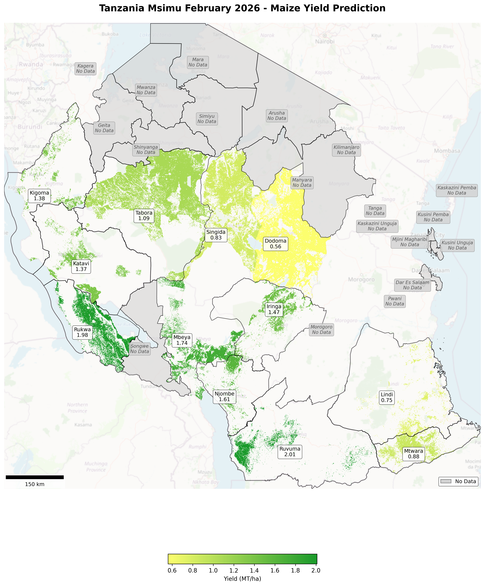
Regional Maize Yield Forecasts — Msimu
In February 2026, Ruvuma is the top performing region with a maize yield prediction of 2.02 MgT/ha, while Dodoma is the lowest at 0.56 MgT/ha, indicating a notable yield disparity across Tanzania during the Msimu season.
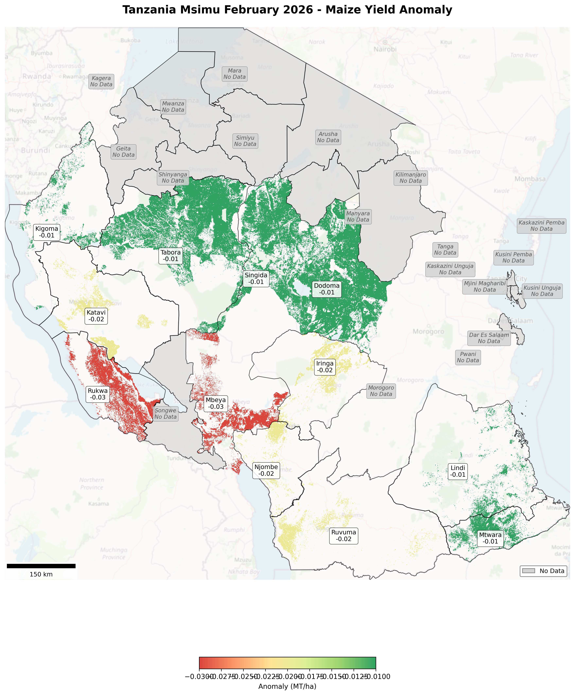
Regional Maize Yield Anomaly — Msimu
In February 2026, Dodoma region shows the largest negative maize yield anomaly at -0.02 MgT/ha, indicating below-average production, while western regions like Kigoma and Katavi exhibit slightly better performance with anomalies around -0.01 MgT/ha. Several northern and coastal regions have no data available.
Rice Maps — Msimu
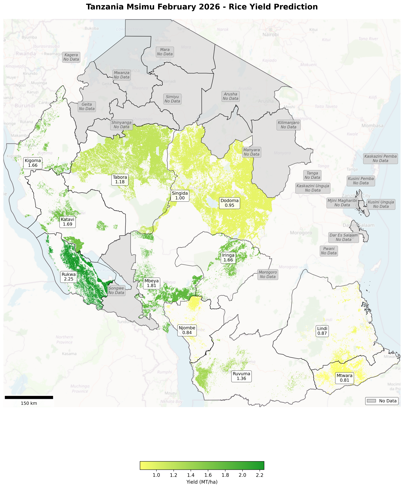
Regional Rice Yield Forecasts — Msimu
In February 2026, Rukwa leads rice yields at 2.40 MgT/ha, while Mtwara records the lowest at 0.79 MgT/ha. Yields are above average in the southwest and below average with negative anomalies in regions like Dodoma and Mtwara.
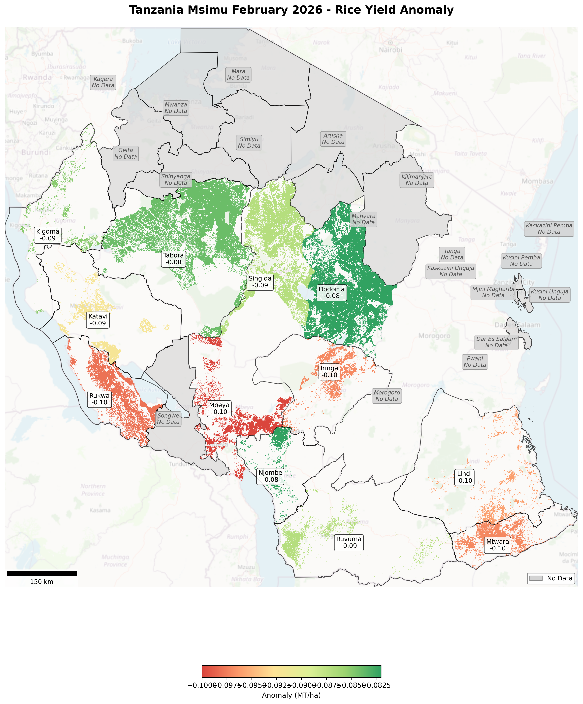
Regional Rice Yield Anomaly — Msimu
In February 2026, Tanzania's Msimu rice yield anomalies show Dodoma with the highest positive anomaly of +0.08 MgT/ha, while Rukwa, Mbeya, Iringa, Lindi, and Mtwara exhibit the largest negative anomalies of -0.10 MgT/ha, indicating significant below-average yields in these regions.
Beans Maps — Msimu
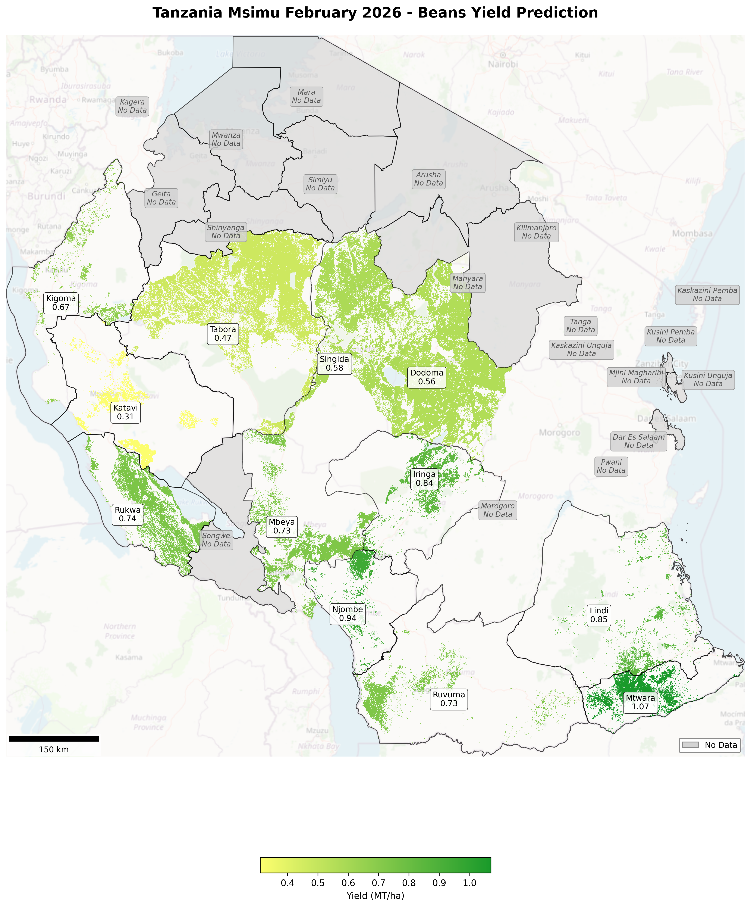
Regional Beans Yield Forecasts — Msimu
In February 2026, Mtwara is predicted as the top-performing bean yield region in Tanzania with 1.07 MgT/ha, while Katavi shows the lowest yield at 0.31 MgT/ha. Most regions exhibit above-average yields ranging from 0.47 to 0.94 MgT/ha, with no data available for several northern and eastern regions.
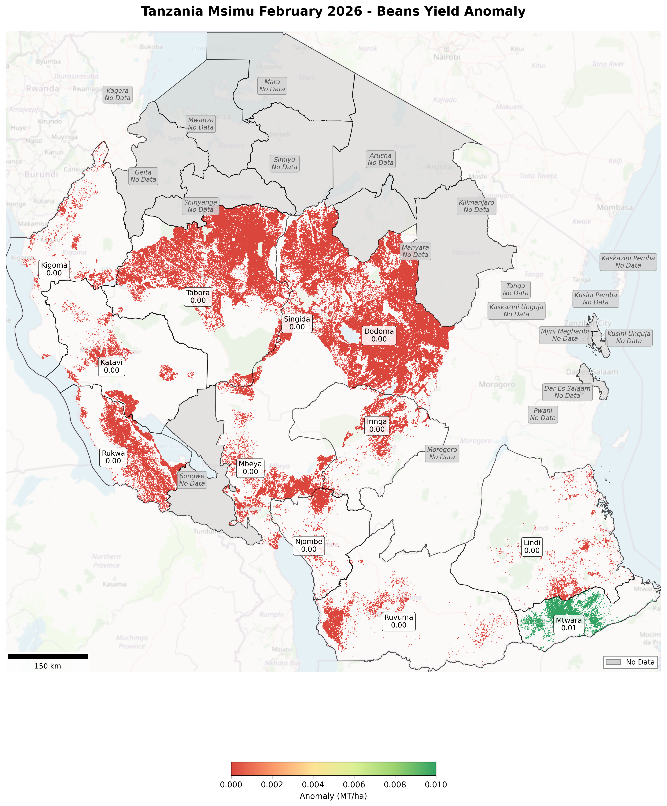
Regional Beans Yield Anomaly — Msimu
In February 2026, Tanzania's Msimu season shows positive beans yield anomalies of about 0.01 MgT/ha in northern regions like Dodoma, Singida, and Kigoma, with highest anomalies reaching 0.007 MgT/ha. Negative or near-zero anomalies are observed in southern regions such as Njombe and Mtwara, indicating below-average yields.
Production Narrative
Bean production area totals to approximately 169,836 hectares with regional mean predicted production topping in Tabora (19,429 tons), followed by Dodoma (13,162 tons) and Singida (12,793 tons). Maize covers the largest production area, about 1,038,564 hectares, with Rukwa leading at 222,291 tons mean predicted production, followed by Tabora (317,837 tons) and Mbeya (167,864 tons). Rice has a smaller production area of around 219,560 hectares with Mbeya (32,336 tons), Tabora (61,371 tons), and Rukwa (47,818 tons) as the top producers. Maize remains the top-performing crop in terms of production volume although it experiences slight negative yield anomalies across regions. Production forecasts for all crops carry some uncertainty as indicated by standard errors, particularly for rice with higher variability in yield predictions.
Kenya

Figure: Agricultural Calendar – Kenya
Kenya is currently in the long rains season (February to August), with the main planting period ongoing and harvest expected to begin from July through August. This period marks the active growing and development stage for major crops including maize, beans, and rice.
Regional Crop Conditions Summary
Bean crops show a stable trend across all reporting counties with predicted yield anomalies close to neutral, mostly ranging between -0.12% and +21.86%. Most counties report favorable and stable conditions for beans, except for some arid counties like Kajiado and Tharaka-Nithi showing the highest positive anomalies but with low predicted yields. Maize conditions are stable but largely negative in yield anomalies across most counties, with anomalies ranging from -0.02 to +0.005 and some counties like Kajiado experiencing substantial negative anomalies up to -7.09%. Rice conditions remain stable with negative yield anomalies in all reporting regions except for Vihiga and Nyeri which show improving trends with notable positive anomalies. The highest positive rice trend is +32.88% anomaly in Vihiga, whereas counties like Embu and Nyandarua show sharp negative anomalies. Overall, crops exhibit mostly stable to slightly declining yield anomalies with no alarming extremes in yield except localized stresses noted in maize in Kajiado and rice in some central counties.
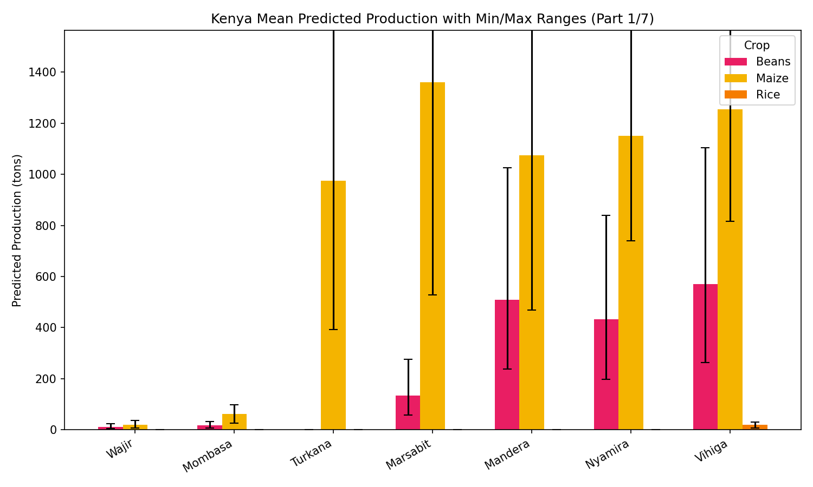
Figure: Mean Predicted Production with Min/Max – Kenya (Part 1)
Bar chart showing mean predicted production for maize, beans, and rice with min/max ranges.
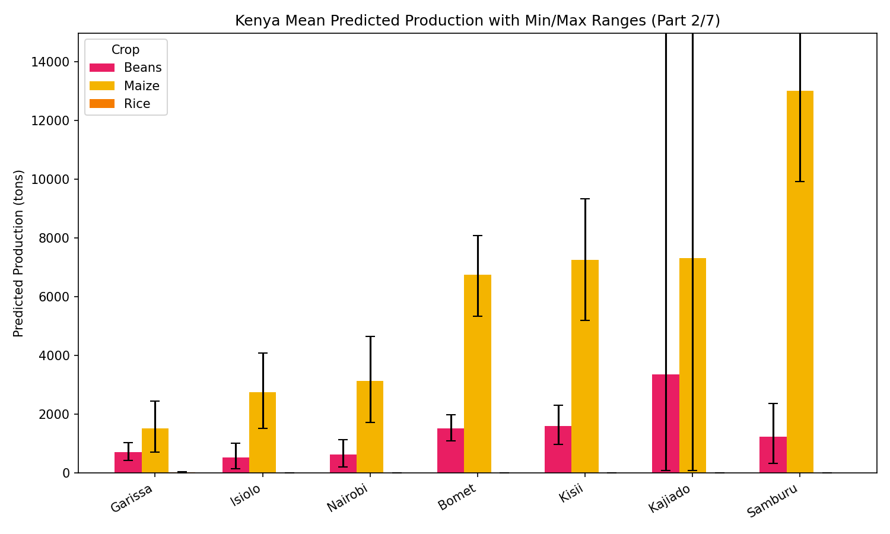
Figure: Mean Predicted Production with Min/Max – Kenya (Part 2)
Bar chart showing mean predicted production for maize, beans, and rice with min/max ranges.
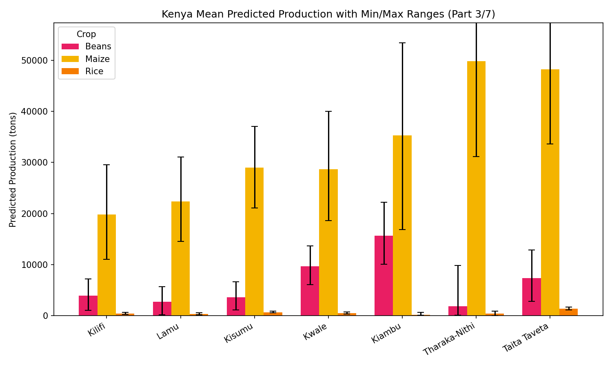
Figure: Mean Predicted Production with Min/Max – Kenya (Part 3)
Bar chart showing mean predicted production for maize, beans, and rice with min/max ranges.
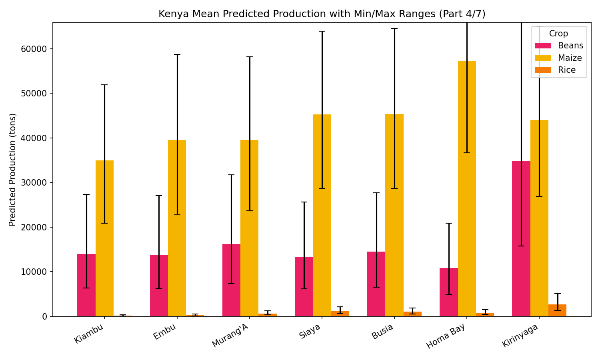
Figure: Mean Predicted Production with Min/Max – Kenya (Part 4)
Bar chart showing mean predicted production for maize, beans, and rice with min/max ranges.
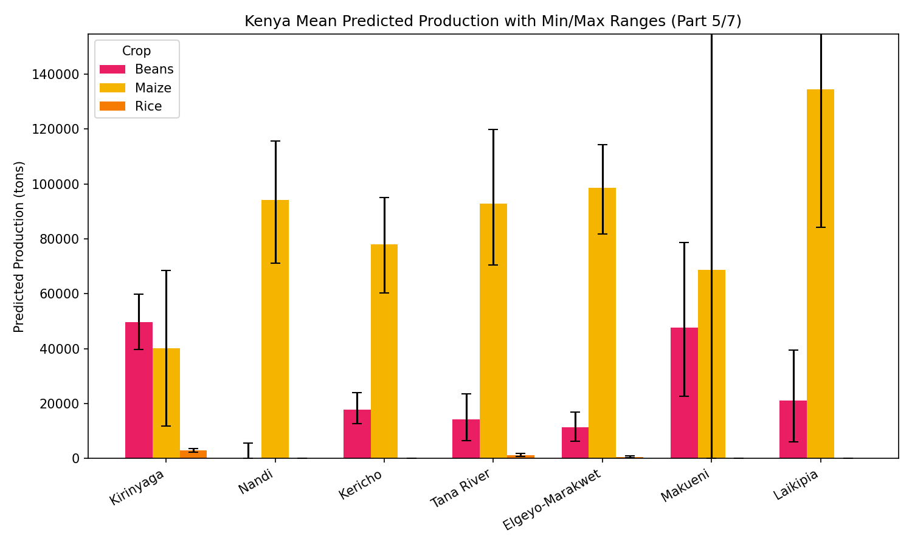
Figure: Mean Predicted Production with Min/Max – Kenya (Part 5)
Bar chart showing mean predicted production for maize, beans, and rice with min/max ranges.
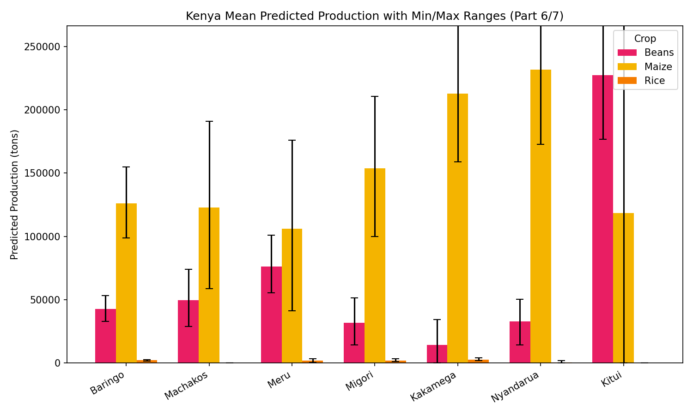
Figure: Mean Predicted Production with Min/Max – Kenya (Part 6)
Bar chart showing mean predicted production for maize, beans, and rice with min/max ranges.
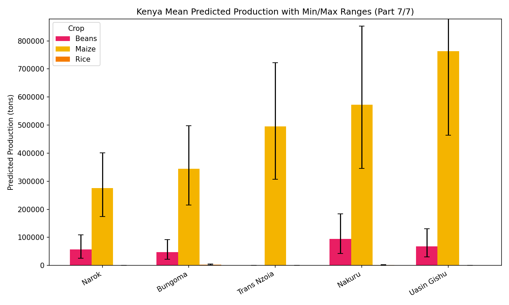
Figure: Mean Predicted Production with Min/Max – Kenya (Part 7)
Bar chart showing mean predicted production for maize, beans, and rice with min/max ranges.
Maize Maps
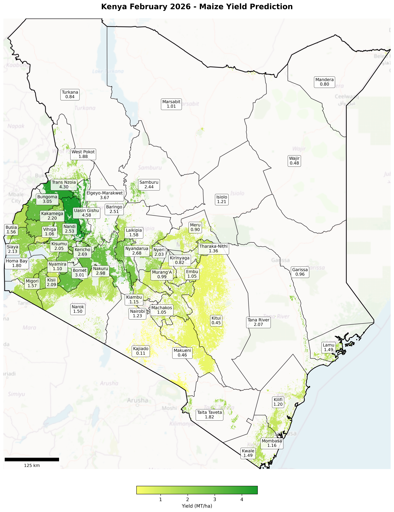
Regional Maize Yield Forecasts
In February 2026, Trans Nzoia leads Kenya in maize yield prediction with 4.30 MgT/ha, while Kajiado records the lowest at 0.11 MgT/ha, marking a significant yield disparity across regions. Western Kenya generally shows above-average yields, contrasting with much lower predicted outputs in southeastern areas.
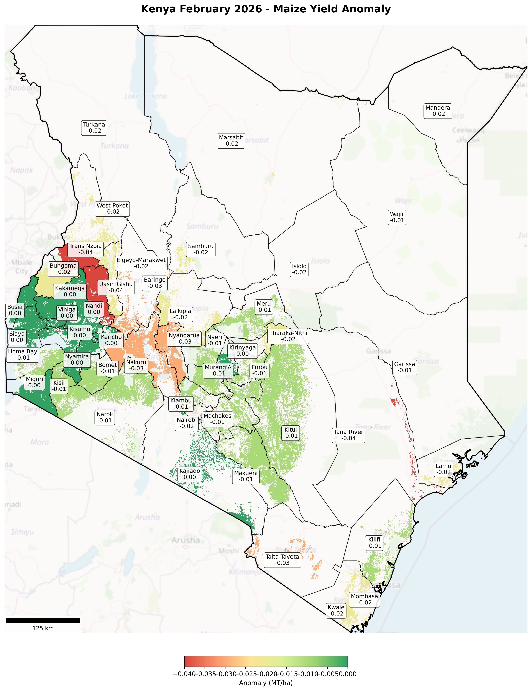
Regional Maize Yield Anomaly
In February 2026, Kakamega recorded the highest positive maize yield anomaly at +0.01 MgT/ha, while several regions including Nyandarua, Kitui, and Mombasa experienced the lowest negative anomalies around -0.02 MgT/ha, indicating significant below-average yields in central and southeastern Kenya.
Rice Maps
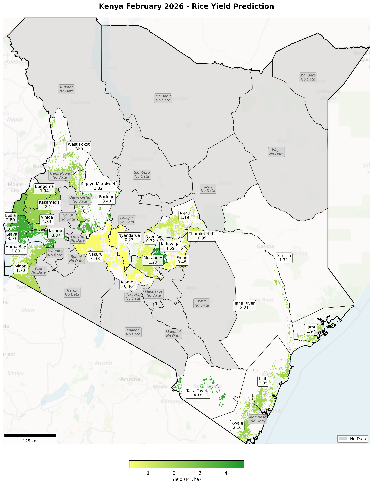
Regional Rice Yield Forecasts
In February 2026, Kirinyaga is forecasted as the top-performing region with a rice yield of 4.69 MgT/ha, while Nyandarua records the lowest yield at 0.27 MgT/ha. The map highlights significant yield variation, with central regions showing notably lower productivity compared to the western and southeastern high-yield zones.
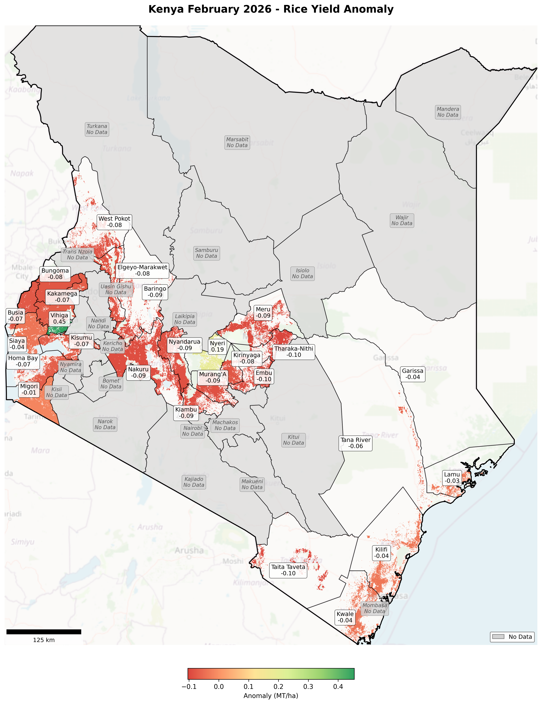
Regional Rice Yield Anomaly
In February 2026, Vihiga showed the highest positive rice yield anomaly at +0.45 MgT/ha, while Tharaka-Nithi and Taita Taveta experienced the lowest yield anomalies at -0.10 MgT/ha, indicating notable above-average and below-average rice production regions respectively. Most other regions, including Nyeri (+0.19 MgT/ha) and several with -0.09 to -0.10 MgT/ha, showed negative to slightly positive anomalies.
Beans Maps
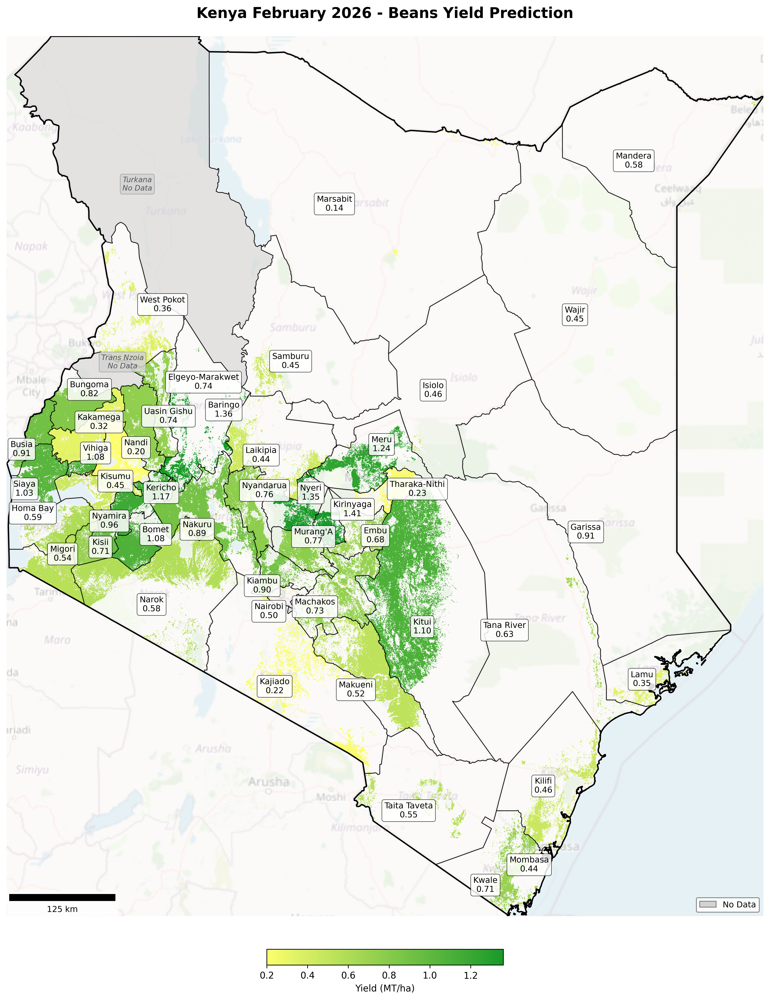
Regional Beans Yield Forecasts
In February 2026, Kirinyaga leads Kenya in bean yield prediction with an estimated 2.01 MgT/ha, followed closely by Nyeri (1.87 MgT/ha) and Baringo (1.69 MgT/ha), while regions like Kajiado and Tharaka-Nithi show the lowest yields around 0.10 MgT/ha. Notable extremes include the high yields concentrated in central Kenya contrasted with significantly lower yields in southern and northern parts.
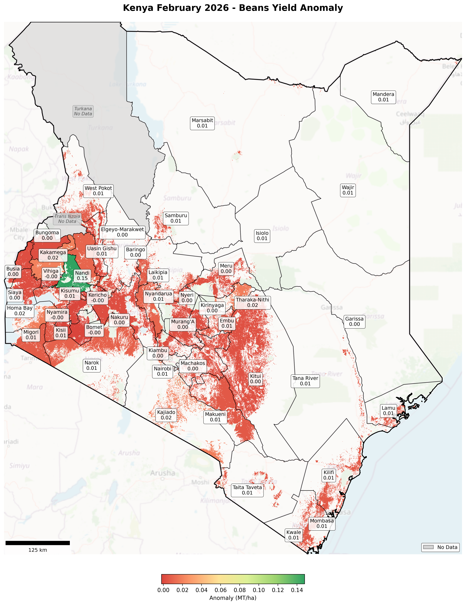
Regional Beans Yield Anomaly
In February 2026, Nandi shows the highest positive beans yield anomaly at +0.15 MgT/ha, while most other regions exhibit near-zero to slightly positive anomalies, with Vihiga and Kericho showing negligible negative anomalies close to 0.00 MgT/ha. The map highlights Nandi as an extreme positive outlier amidst generally marginal changes.
Production Narrative
Bean production is predicted high in Kitui with a mean production of 227,268 tons over 132,905 ha, followed by Nakuru (118,395 tons) and Narok (60,395 tons). Maize leads in overall production with Nakuru topping at a mean predicted production of 628,929 tons on 211,050 ha, followed by Uasin Gishu (830,629 tons) and Trans Nzoia (504,639 tons). Rice production is highest in Bungoma with 2,790 tons on 1,438 ha, followed by Baringo (2,139 tons) and Kakamega (2,656 tons). Trends across crops are stable with beans showing consistent yields, maize facing mild negative anomalies in several counties, and rice showing mixed but mostly stable production with improving outlook in select areas like Vihiga and Nyeri.
Zambia
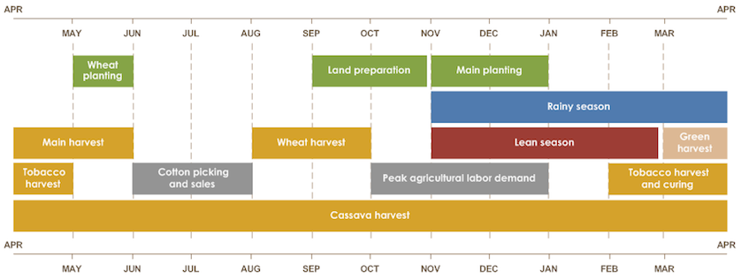
Figure: Agricultural Calendar – Zambia
Zambia is currently in the main crop season spanning November to May 2026, with planting having occurred from November through January. The main harvest period is set to commence in April and continue through May, as crops are progressing towards maturity with final yield predictions being made in February.
Regional Crop Conditions Summary
Crop conditions for beans are stable across all regions, with small positive predicted yield anomalies ranging from +0.005 to +0.008 and trends marked as stable. Predicted bean yields range from 0.46 MgT/ha in Southern to 0.67 MgT/ha in North-Western province. Maize conditions are stable but show minor negative yield anomalies between -0.005 and -0.014 across regions, with yields varying from 1.32 MgT/ha in Western to 3.4 MgT/ha in Muchinga. Rice is stable generally but exhibits notable negative yield anomalies between -0.074 and -0.105, with yields from 0.75 MgT/ha in Western up to 1.49 MgT/ha in Muchinga, signaling some watchful trends especially in Southern and Western regions due to pronounced declines.
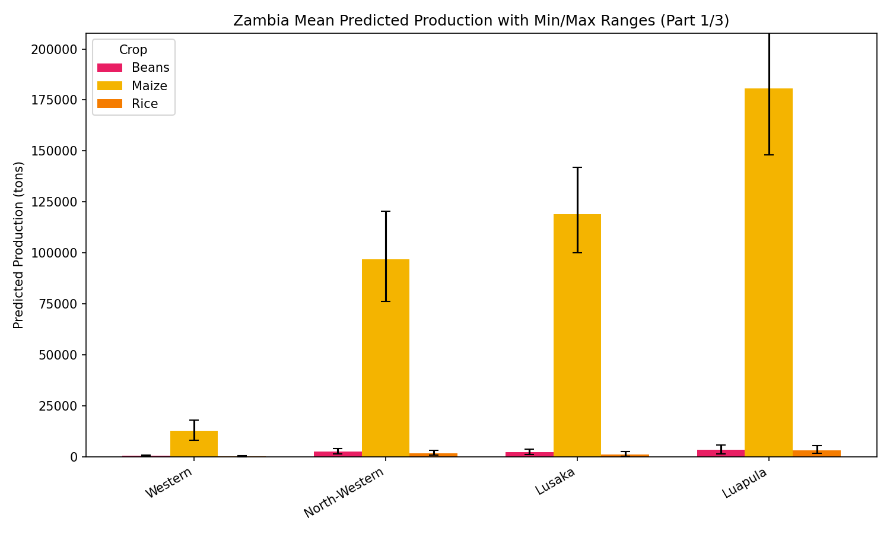
Figure: Mean Predicted Production with Min/Max – Zambia (Part 1)
Bar chart showing mean predicted production for maize, beans, and rice with min/max ranges.
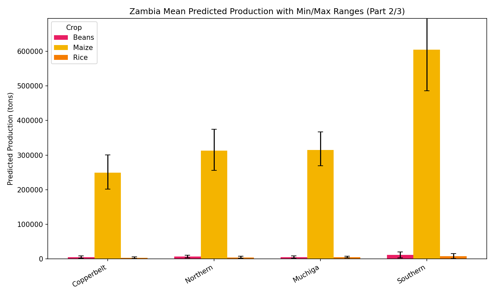
Figure: Mean Predicted Production with Min/Max – Zambia (Part 2)
Bar chart showing mean predicted production for maize, beans, and rice with min/max ranges.
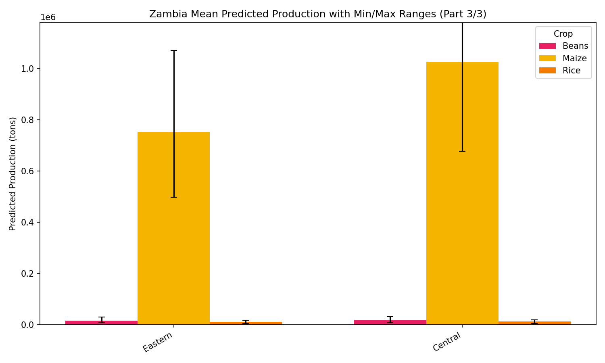
Figure: Mean Predicted Production with Min/Max – Zambia (Part 3)
Bar chart showing mean predicted production for maize, beans, and rice with min/max ranges.
Maize Maps
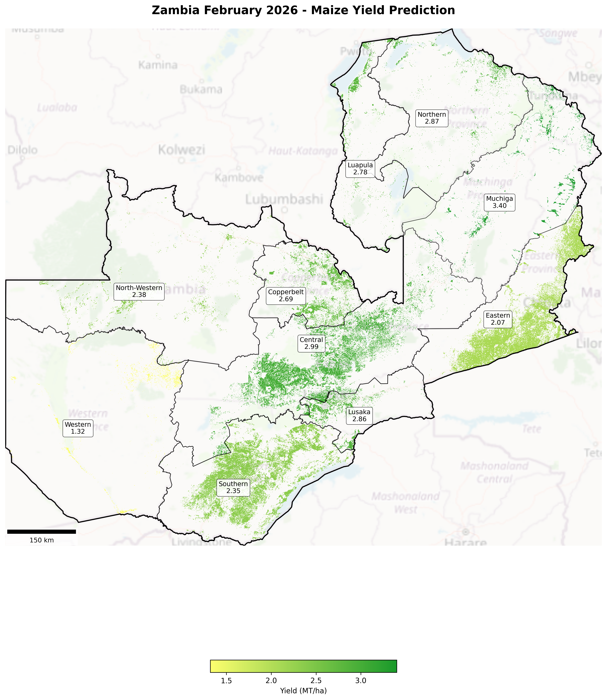
Regional Maize Yield Forecasts
In February 2026, Muchinga is the top-performing region in Zambia with a maize yield prediction of 3.40 MgT/ha, while Western has the lowest yield at 1.32 MgT/ha, indicating significant regional yield variation. Most other regions show moderate yields between 2.0 and 3.0 MgT/ha, with a clear west-east gradient in yield levels.
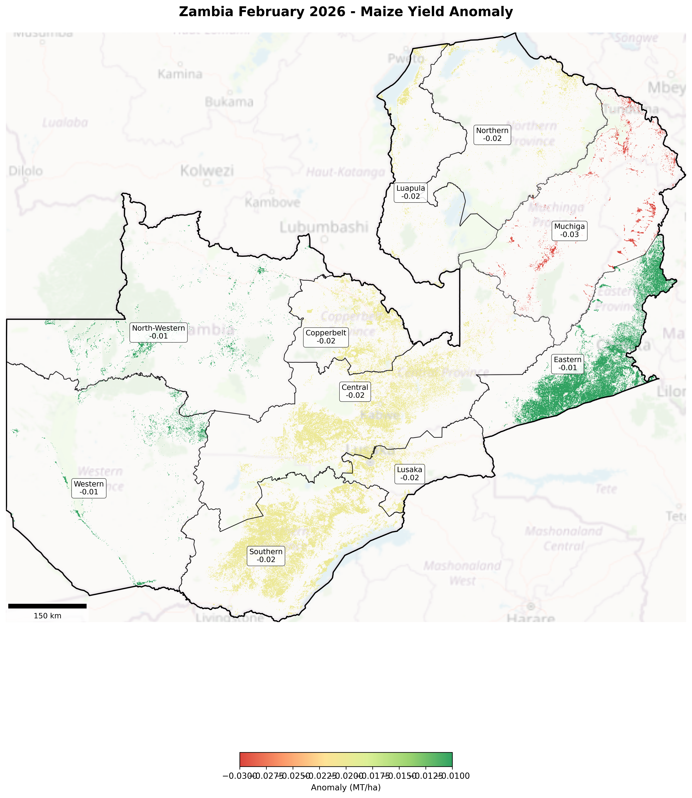
Regional Maize Yield Anomaly
In February 2026, Zambia's maize yield anomalies show the Southern region as the lowest performing with values around -0.014 MgT/ha (negative anomaly), while North-Western exhibits slight positive anomalies near -0.006 MgT/ha. The Southern region stands out with the most extreme negative maize yield anomaly.
Rice Maps
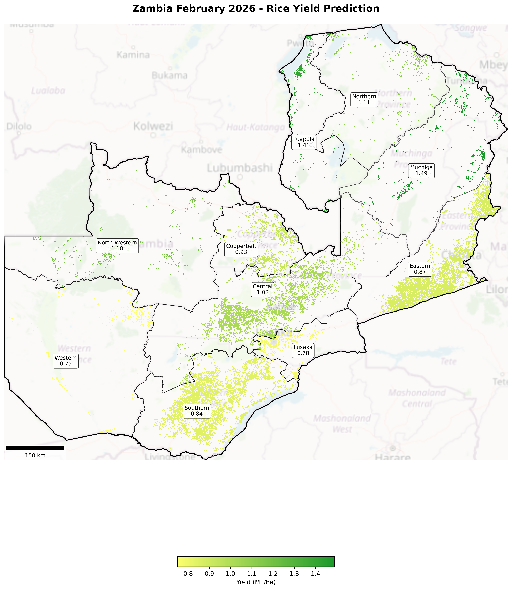
Regional Rice Yield Forecasts
In February 2026, Muchinga shows the highest rice yield at 1.49 MgT/ha, indicating an above-average performance, while Western records the lowest at 0.75 MgT/ha, highlighting a negative yield anomaly. Overall, northern regions exhibit stronger yields compared to southern and western parts of Zambia.
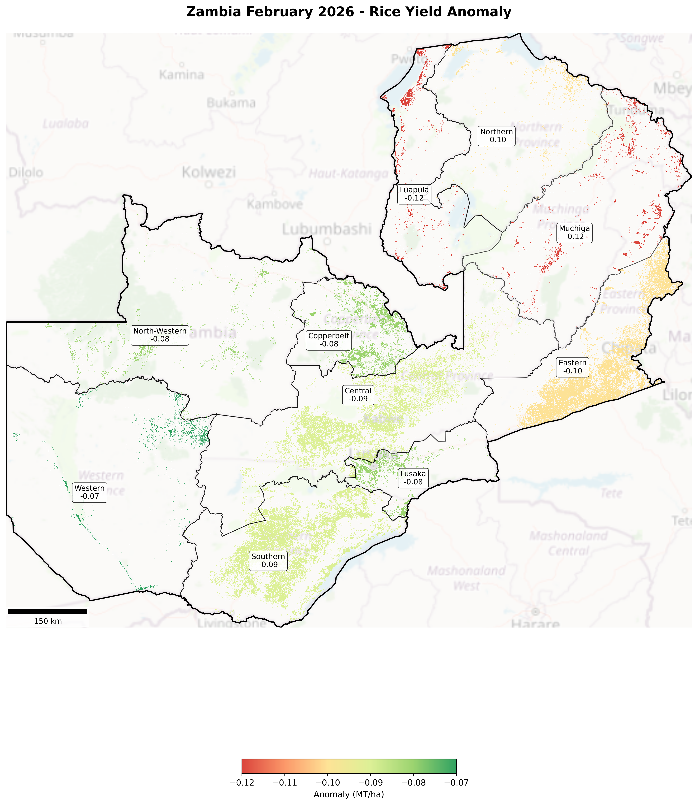
Regional Rice Yield Anomaly
In February 2026, Zambia's rice yield anomalies were predominantly negative, with the highest negative anomalies of -0.10 MgT/ha observed in Eastern, Lusaka, and Southern regions, while Copperbelt showed the least negative anomaly at -0.08 MgT/ha. Southern and Eastern provinces experienced the most pronounced below-average yields.
Beans Maps
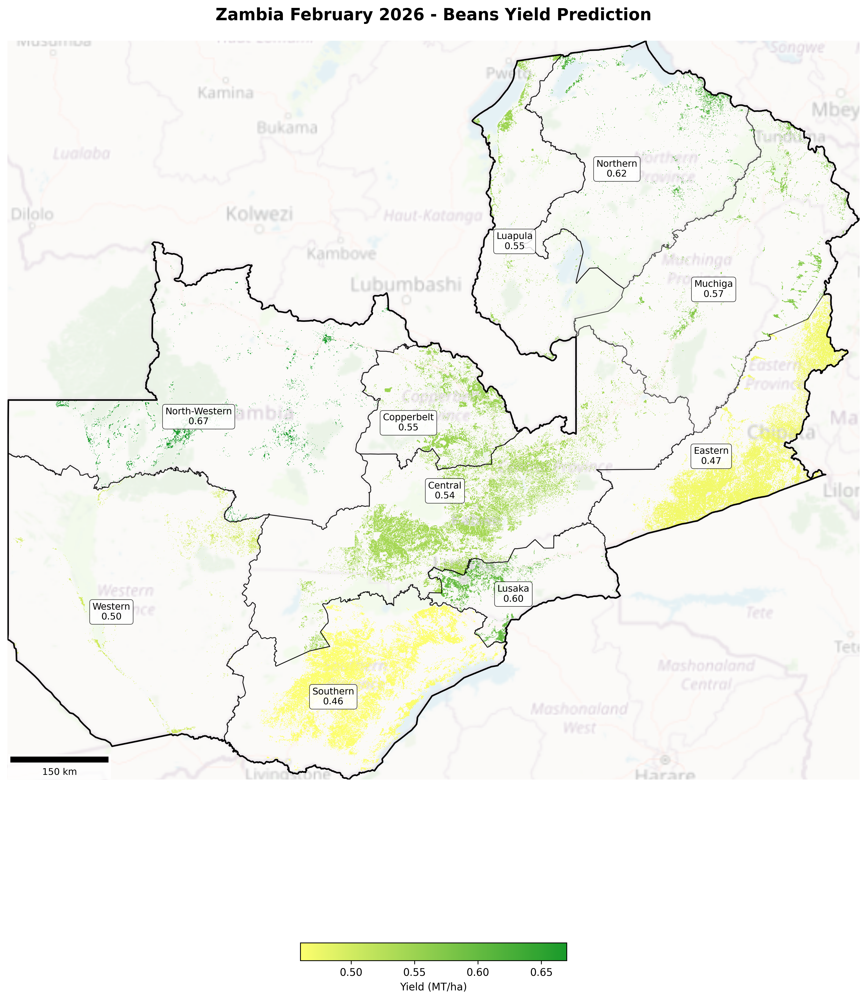
Regional Beans Yield Forecasts
In February 2026, Zambia's Beans yield is highest in the North-Western region at 0.67 MgT/ha, while the Southern region performs lowest at 0.46 MgT/ha, marking a clear yield contrast across the country. Northern and Lusaka regions also show above-average yields near 0.60 MgT/ha, whereas Eastern and Southern provinces display the most pronounced low yield extremes around 0.46-0.47 MgT/ha.
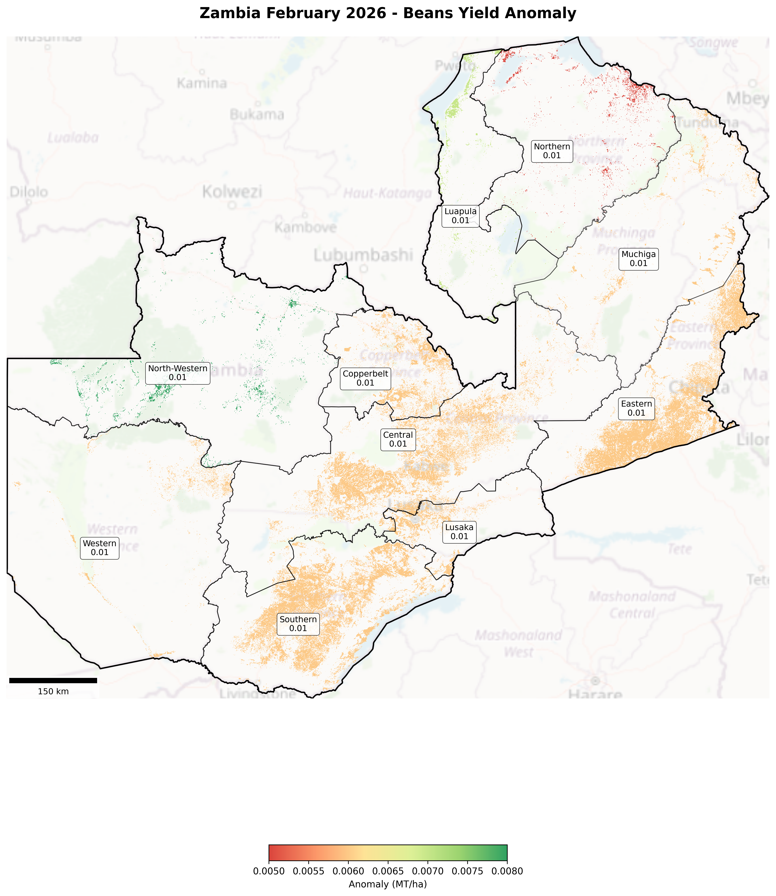
Regional Beans Yield Anomaly
In February 2026, the North-Western region of Zambia shows the highest positive beans yield anomaly nearing 0.008 MgT/ha, while extensive negative anomalies around 0.005 MgT/ha dominate the Central, Southern, and Eastern regions, indicating below-average yields.
Production Narrative
Estimated production area for maize is largest, exceeding 900,000 ha collectively, with Central (area: 344,294 ha, mean production ~1,029,439 tons) and Eastern (365,683 ha, ~756,964 tons) provinces being top producers. Beans cover smaller areas, with Central (32,002 ha, ~17,281 tons), Eastern (33,990 ha, ~15,975 tons), and Southern (23,915 ha, ~11,001 tons) as leading regions. Rice has the smallest production areas, with Central (11,994 ha, ~12,234 tons), Eastern (12,739 ha, ~11,083 tons), and Southern (8,963 ha, ~7,529 tons) as main contributors. Maize remains the top-performing crop by production volume. While all crops show stable trends, maize in Western and Southern regions reflects higher uncertainty due to the negative yield anomalies observed, warranting close monitoring.
Rwanda

Figure: Agricultural Calendar – Rwanda
Rwanda is currently in the early phase of the Season B agricultural calendar, with the long rainy season starting in February. Crop growth is ongoing with harvest expected to begin in June and continue through July. This period marks an important phase for monitoring crop yields and preparing for the upcoming harvest.
Regional Crop Conditions Summary
Crop conditions remain stable across Rwanda for the main crops of beans, maize, and rice. For beans, all five regions including Amajyaruguru, Amajyepfo, Iburasirazuba, Iburengerazuba, and Umujyi Wa Kigali show stable trends with slightly positive predicted yield anomalies ranging from 0.004 to 0.01 MgT/ha, with Umujyi Wa Kigali having the highest predicted yield anomaly percentage of 0.471%. Maize conditions are similarly stable but exhibit slightly negative predicted yield anomalies across all regions, with Umujyi Wa Kigali experiencing the largest negative anomaly at -1.342%. Rice shows mixed anomalies: Iburengerazuba has a strong positive anomaly of 0.533 MgT/ha (10.519%), while Iburasirazuba and Umujyi Wa Kigali show negative anomalies of -0.087 and -0.084 MgT/ha respectively. The significant positive anomaly in rice yield at Iburengerazuba is notable, whereas the consistent negative anomalies for maize and rice in Umujyi Wa Kigali merit close monitoring.
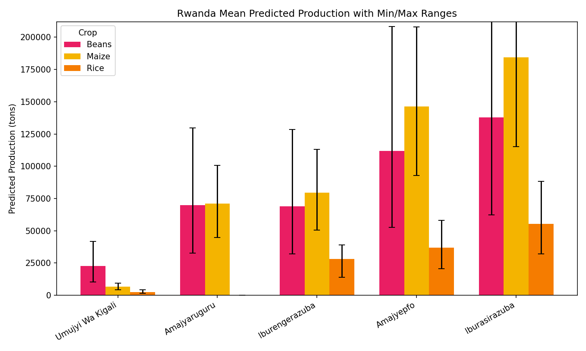
Figure: Mean Predicted Production with Min/Max – Rwanda (Part 1)
Bar chart showing mean predicted production for maize, beans, and rice with min/max ranges.
Maize Maps

Regional Maize Yield Forecasts
In February 2026, the highest predicted maize yield in Rwanda is in the Amajyaruguru region at 1.75 MgT/ha, while the lowest yield is in Umujyi Wa Kigali at 0.96 MgT/ha. The western regions generally show above-average yields (around 1.6–1.75 MgT/ha), contrasting with lower yields in central and eastern areas.

Regional Maize Yield Anomaly
In February 2026, the Amayepfo region in southern Rwanda shows the least negative maize yield anomaly near 0.00 MgT/ha, while Umujyi Wa Kigali in the center exhibits the most severe negative anomaly around -0.01 MgT/ha, indicating below-average yields across the country with extremes concentrated in Kigali.
Rice Maps

Regional Rice Yield Forecasts
In February 2026, the highest predicted rice yield in Rwanda is in Iburengerazuba with 5.60 MgT/ha, while Umujyi Wa Kigali shows the lowest yield at 3.92 MgT/ha. Yields range from 3.92 to 5.60 MgT/ha, with a notable low in the central region and high productivity in the west.

Regional Rice Yield Anomaly
In February 2026, the western region of Iburengerazuba showed the highest positive rice yield anomaly at +0.53 MgT/ha, while the eastern region of Iburasirazuba experienced the lowest with a negative anomaly of -0.09 MgT/ha, indicating significant spatial variation in rice productivity.
Beans Maps

Regional Beans Yield Forecasts
In February 2026, Umujyi wa Kigali is the top-performing region with a predicted bean yield of 1.68 MgT/ha, while Iburasiirazuba shows the lowest yield at 0.53 MgT/ha. The map highlights a significant yield gradient, with yields notably higher in central regions compared to the eastern areas.

Regional Beans Yield Anomaly
In February 2026, eastern Rwanda shows the highest positive bean yield anomaly, peaking near 0.01 MgT/ha in Iburasirazuba, while the northern region around Amajyaruguru has the lowest yields with anomalies near 0.004 MgT/ha, indicating a notable negative anomaly.
Production Narrative
Production areas and outputs vary by crop and region. Beans have substantial production areas with Iburasirazuba leading (259,944 ha) and a mean predicted production of 137,770 tons, followed by Amajyepfo (174,919 ha, 113,697 tons) and Iburengerazuba (97,300 ha, 70,056 tons). Maize is also widely cultivated, with top production in Iburasirazuba (132,579 ha, 184,285 tons) and Amajyepfo (89,213 ha, 147,201 tons), though Umujyi Wa Kigali has notably lower production (6,806 ha, 6,534 tons). Rice, while concentrated in smaller areas, shows high yield, especially in Iburengerazuba (5,086 ha, 28,482 tons) and Amajyepfo (9,143 ha, 38,675 tons). Rice in Iburengerazuba stands out as the top performing crop by yield anomaly and production efficiency. Overall, production trends are stable, but negative anomalies in maize and rice yields in Umujyi Wa Kigali indicate localized challenges and uncertainties requiring further observation.
Malawi

Figure: Agricultural Calendar – Malawi
Malawi is currently in the main agricultural season covering November to July, with planting ongoing since November and the main harvest period approaching from April through July. February marks the mid-point of the growing season, with crop development under way and preparations for the upcoming harvest ramping up across all regions.
Regional Crop Conditions Summary
Crop conditions across Malawi remain stable for beans, maize, and rice as of February 2026. Beans show slightly positive yield anomalies in Central (1.046%) and Northern Regions (0.78%) and a smaller positive anomaly (0.3%) in the Southern Region, indicating generally favorable conditions for this crop nationwide with no alarming trends. Maize exhibits slight negative yield anomalies in all regions: Central (-0.607%), Northern (-0.372%), and Southern (-0.347%), but the overall status remains stable without notable stress. Rice displays the most pronounced negative yield anomalies, with Central (-6.464%), Northern (-7.433%), and Southern (-8.488%) Regions all reflecting decreasing yields, suggesting a need for monitoring potential challenges. No extreme adverse conditions are flagged otherwise.
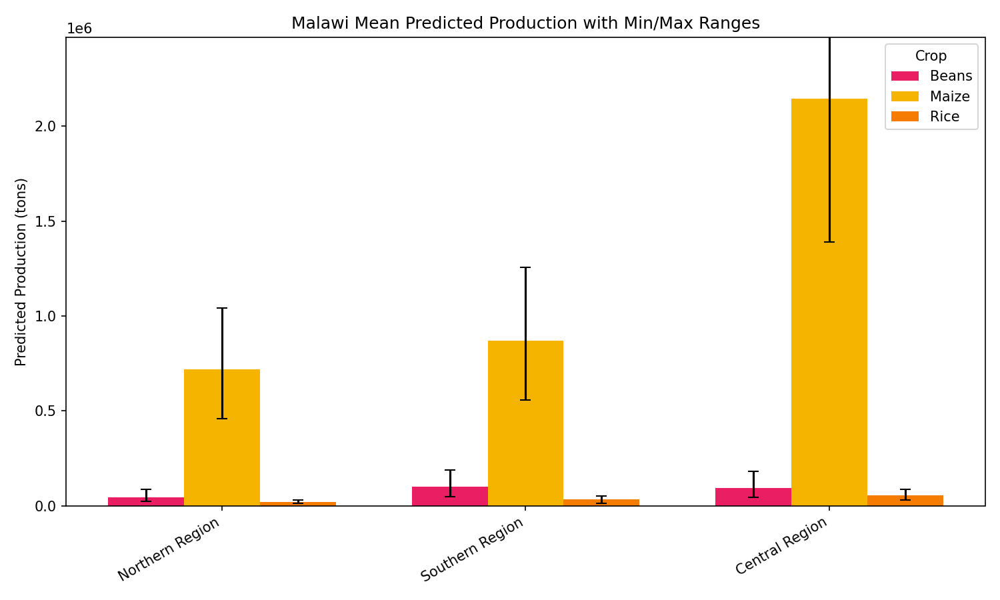
Figure: Mean Predicted Production with Min/Max – Malawi (Part 1)
Bar chart showing mean predicted production for maize, beans, and rice with min/max ranges.
Maize Maps
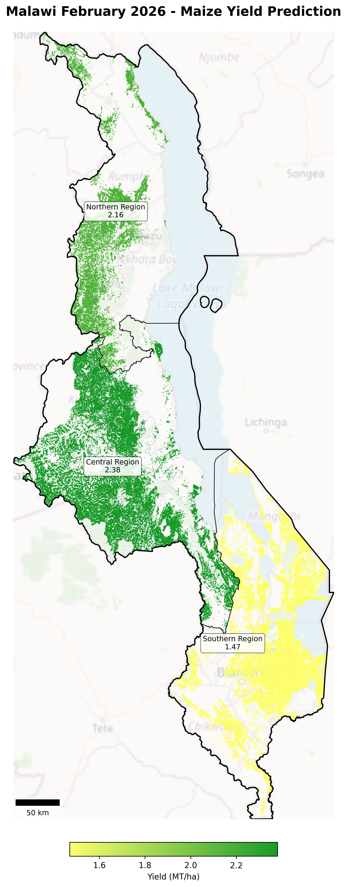
Regional Maize Yield Forecasts
In February 2026, Malawi's Central Region is the top performer with a maize yield of 2.53 MgT/ha, while the Southern Region shows the lowest yield at 1.16 MgT/ha, indicating a significant regional disparity highlighted by the yellow low-yield zones in the south.
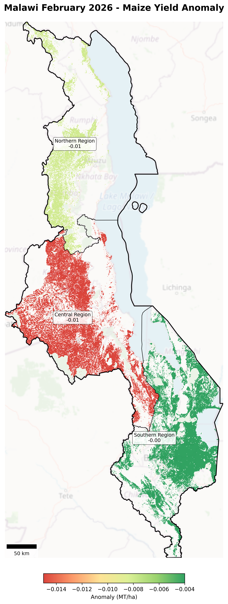
Regional Maize Yield Anomaly
In February 2026, Malawi's Southern Region shows the top maize yield anomaly with slightly less negative values around -0.00 MgT/ha, while the Central Region experiences the lowest performance with a more negative anomaly near -0.01 MgT/ha, indicating below-average yields across all regions.
Rice Maps
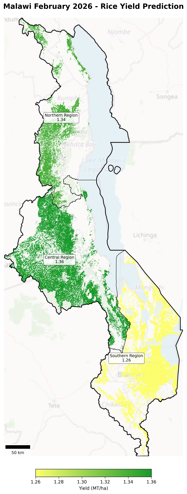
Regional Rice Yield Forecasts
In February 2026, Malawi's Central Region shows the highest rice yield prediction at 1.48 MgT/ha, indicating above-average production, while the Southern Region has the lowest yield at 1.00 MgT/ha, reflecting a yield closer to the baseline or low end. The map highlights a significant yield gradient from high in the central area to lower in the southern part.
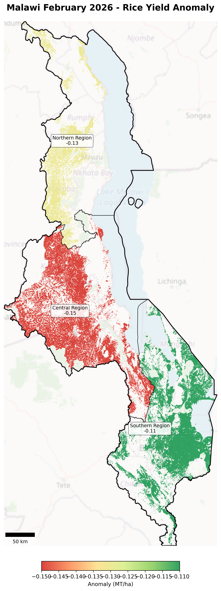
Regional Rice Yield Anomaly
In February 2026, Malawi's Central Region shows the largest negative rice yield anomaly at -0.10 MgT/ha, while the Northern and Southern Regions exhibit slightly smaller negative anomalies of -0.09 MgT/ha, indicating below-average yields across the country with the Central Region as the low extreme.
Beans Maps
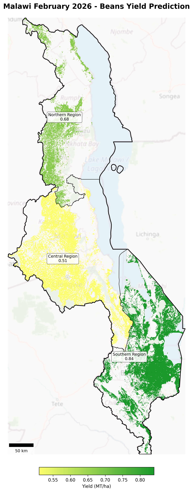
Regional Beans Yield Forecasts
In February 2026, the Southern Region of Malawi shows the highest predicted beans yield at 0.92 MT/ha, while the Central Region has the lowest at 0.52 MT/ha. The map highlights a significant yield gradient from low in the Central Region (yellow) to high in the Southern Region (dark green).
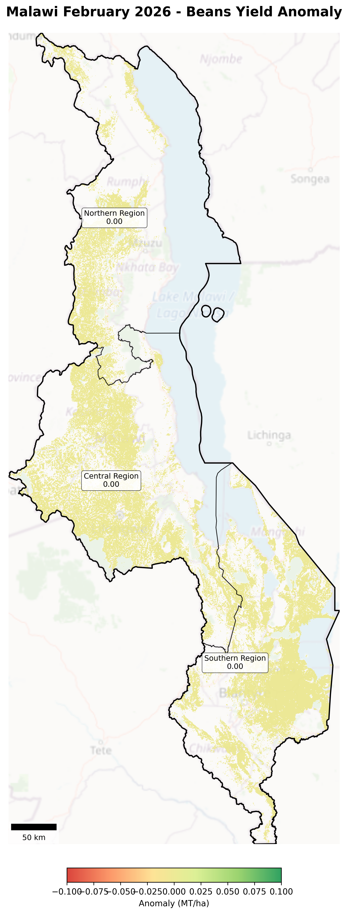
Regional Beans Yield Anomaly
In February 2026, Malawi's Northern and Central regions show positive bean yield anomalies of +0.01 Mg/ha, while the Southern region exhibits a near-neutral anomaly of 0.00 Mg/ha, with significant positive deviations concentrated in the north and center.
Production Narrative
Maize represents the largest production area totaling over 1.8 million hectares across Central (901,662 ha), Northern (333,215 ha), and Southern (592,161 ha) Regions. Production forecasts show Central Region leading in maize with a mean estimated production of 2,281,205 tons, followed by Southern (686,907 tons) and Northern (706,416 tons) Regions. Beans cover smaller areas, with Central (181,339 ha), Southern (119,093 ha), and Northern (67,015 ha); mean predicted productions peak in Central (94,296 tons), Southern (109,566 tons), and Northern (46,240 tons). Rice has the smallest cultivation area with Central (39,510 ha), Southern (25,948 ha), and Northern (14,601 ha); mean productions range from 25,948 tons in Southern to 58,475 tons in Central. Rice shows the highest variability given wide standard errors and significant negative anomalies, indicating increased uncertainty in yields, whereas maize and beans maintain stable trends across regions.
Regional Production Forecast Tables
United Republic Of Tanzania – Regional Production Table
| Crop | Region | Predicted Yield (MT/ha) | Yield Anomaly | Min–Max Production (tons) | Condition |
|---|---|---|---|---|---|
| Beans | Dodoma | 0.56 | 0.006 | 5171.0 – 21624.0 | Favorable |
| Beans | Iringa | 0.84 | 0.004 | 2798.0 – 6827.0 | Favorable |
| Beans | Katavi | 0.31 | 0.007 | 100.0 – 6423.0 | Favorable |
| Beans | Kigoma | 0.67 | 0.006 | 3634.0 – 11562.0 | Favorable |
| Beans | Lindi | 0.85 | 0.004 | 1270.0 – 3064.0 | Favorable |
| Beans | Mbeya | 0.73 | 0.004 | 5303.0 – 15094.0 | Favorable |
| Beans | Mtwara | 1.07 | 0.003 | 1583.0 – 3145.0 | Favorable |
| Beans | Njombe | 0.94 | 0.002 | 3081.0 – 6841.0 | Favorable |
| Beans | Rukwa | 0.74 | 0.003 | 6176.0 – 17577.0 | Favorable |
| Beans | Ruvuma | 0.73 | 0.005 | 3166.0 – 9011.0 | Favorable |
| Beans | Singida | 0.58 | 0.006 | 5073.0 – 20954.0 | Favorable |
| Beans | Tabora | 0.47 | 0.006 | 5787.0 – 35137.0 | Favorable |
| Maize | Dodoma | 0.56 | -0.021 | 13264.0 – 187347.0 | Watch |
| Maize | Iringa | 1.47 | -0.017 | 38686.0 – 80529.0 | Watch |
| Maize | Katavi | 1.37 | -0.013 | 54245.0 – 123807.0 | Watch |
| Maize | Kigoma | 1.38 | -0.011 | 66025.0 – 150691.0 | Watch |
| Maize | Lindi | 0.74 | -0.016 | 4394.0 – 23200.0 | Watch |
| Maize | Mbeya | 1.75 | -0.019 | 120862.0 – 222539.0 | Watch |
| Maize | Mtwara | 0.88 | -0.015 | 6122.0 – 22041.0 | Watch |
| Maize | Njombe | 1.61 | -0.017 | 39048.0 – 81044.0 | Watch |
| Maize | Rukwa | 1.99 | -0.017 | 163088.0 – 285962.0 | Watch |
| Maize | Ruvuma | 2.02 | -0.015 | 87620.0 – 148324.0 | Watch |
| Maize | Singida | 0.83 | -0.02 | 54456.0 – 217826.0 | Watch |
| Maize | Tabora | 1.09 | -0.016 | 177872.0 – 484046.0 | Watch |
| Rice | Dodoma | 0.93 | -0.082 | 6210.0 – 53524.0 | Watch |
| Rice | Iringa | 1.71 | -0.097 | 7323.0 – 18588.0 | Poor |
| Rice | Katavi | 1.76 | -0.092 | 11723.0 – 30048.0 | Poor |
| Rice | Kigoma | 1.72 | -0.085 | 14270.0 – 36852.0 | Watch |
| Rice | Lindi | 0.86 | -0.096 | 627.0 – 5547.0 | Poor |
| Rice | Mbeya | 1.89 | -0.1 | 20702.0 – 47734.0 | Poor |
| Rice | Mtwara | 0.79 | -0.097 | 328.0 – 4614.0 | Poor |
| Rice | Njombe | 0.82 | -0.082 | 591.0 – 12089.0 | Watch |
| Rice | Rukwa | 2.4 | -0.098 | 33074.0 – 67542.0 | Poor |
| Rice | Ruvuma | 1.39 | -0.087 | 6333.0 – 23186.0 | Watch |
| Rice | Singida | 0.99 | -0.087 | 7770.0 – 51894.0 | Watch |
| Rice | Tabora | 1.18 | -0.084 | 25484.0 – 107139.0 | Watch |
Kenya – Regional Production Table
| Crop | Region | Predicted Yield (MT/ha) | Yield Anomaly | Min–Max Production (tons) | Condition |
|---|---|---|---|---|---|
| Beans | Baringo | 1.69 | 0.003 | 32958.0 – 53239.0 | Favorable |
| Beans | Bomet | 1.35 | -0.002 | 1090.0 – 1986.0 | Watch |
| Beans | Bungoma | 0.85 | 0.002 | 28398.0 – 72445.0 | Favorable |
| Beans | Busia | 0.9 | 0.002 | 8757.0 – 20697.0 | Favorable |
| Beans | Elgeyo-Marakwet | 0.84 | 0.002 | 6379.0 – 16966.0 | Favorable |
| Beans | Embu | 0.76 | 0.006 | 8486.0 – 23639.0 | Favorable |
| Beans | Garissa | 0.9 | 0.003 | 439.0 – 1039.0 | Favorable |
| Beans | Homa Bay | 0.34 | 0.019 | 100.0 – 13383.0 | Favorable |
| Beans | Isiolo | 0.47 | 0.006 | 149.0 – 1010.0 | Favorable |
| Beans | Kajiado | 0.1 | 0.019 | 100.0 – 17813.0 | Favorable |
| Beans | Kakamega | 0.29 | 0.02 | 100.0 – 34229.0 | Favorable |
| Beans | Kericho | 1.22 | -0.001 | 12627.0 – 23932.0 | Watch |
| Beans | Kiambu | 1.01 | 0.001 | 10089.0 – 22195.0 | Favorable |
| Beans | Kilifi | 0.47 | 0.006 | 1083.0 – 7167.0 | Favorable |
| Beans | Kirinyaga | 2.01 | 0.001 | 39778.0 – 59791.0 | Favorable |
| Beans | Kisii | 0.92 | 0.005 | 982.0 – 2315.0 | Favorable |
| Beans | Kisumu | 0.51 | 0.005 | 1144.0 – 6647.0 | Favorable |
| Beans | Kitui | 1.71 | 0.003 | 176764.0 – 283088.0 | Favorable |
| Beans | Kwale | 1.0 | 0.006 | 6120.0 – 13698.0 | Favorable |
| Beans | Laikipia | 0.49 | 0.007 | 6022.0 – 39574.0 | Favorable |
| Beans | Lamu | 0.36 | 0.006 | 152.0 – 5690.0 | Favorable |
| Beans | Machakos | 0.84 | 0.003 | 28993.0 – 73961.0 | Favorable |
| Beans | Makueni | 0.63 | 0.006 | 22678.0 – 78617.0 | Favorable |
| Beans | Mandera | 0.58 | 0.007 | 202.0 – 851.0 | Favorable |
| Beans | Marsabit | 0.2 | 0.008 | 100.0 – 601.0 | Favorable |
| Beans | Meru | 1.28 | 0.003 | 55471.0 – 100802.0 | Favorable |
| Beans | Migori | 0.64 | 0.007 | 14341.0 – 51431.0 | Favorable |
| Beans | Mombasa | 0.44 | 0.006 | 4.0 – 32.0 | Favorable |
| Beans | Murang'A | 0.93 | 0.002 | 11980.0 – 28163.0 | Favorable |
| Beans | Nairobi | 0.5 | 0.006 | 206.0 – 1148.0 | Favorable |
| Beans | Nakuru | 1.11 | 0.002 | 74663.0 – 162126.0 | Favorable |
| Beans | Nandi | 0.0 | 0.148 | 0.0 – 5643.0 | Favorable |
| Beans | Narok | 0.62 | 0.009 | 25327.0 – 99359.0 | Favorable |
| Beans | Nyamira | 1.04 | -0.002 | 302.0 – 654.0 | Watch |
| Beans | Nyandarua | 0.75 | 0.01 | 14408.0 – 50209.0 | Favorable |
| Beans | Nyeri | 1.87 | 0.001 | 14063.0 – 22364.0 | Favorable |
| Beans | Samburu | 0.46 | 0.006 | 324.0 – 2372.0 | Favorable |
| Beans | Siaya | 1.09 | 0.002 | 9437.0 – 19261.0 | Favorable |
| Beans | Taita Taveta | 0.55 | 0.006 | 2812.0 – 12856.0 | Favorable |
| Beans | Tana River | 0.63 | 0.006 | 6578.0 – 23589.0 | Favorable |
| Beans | Tharaka-Nithi | 0.1 | 0.019 | 100.0 – 9819.0 | Favorable |
| Beans | Uasin Gishu | 0.66 | 0.01 | 26580.0 – 97155.0 | Favorable |
| Beans | Vihiga | 1.39 | -0.001 | 533.0 – 950.0 | Watch |
| Beans | Wajir | 0.46 | 0.007 | 3.0 – 22.0 | Favorable |
| Beans | West Pokot | 0.53 | 0.007 | 3713.0 – 19805.0 | Favorable |
| Maize | Baringo | 2.51 | -0.014 | 98825.0 – 155010.0 | Watch |
| Maize | Bomet | 3.01 | -0.007 | 5345.0 – 8086.0 | Watch |
| Maize | Bungoma | 3.05 | -0.007 | 284399.0 – 416278.0 | Watch |
| Maize | Busia | 1.56 | -0.004 | 32448.0 – 67101.0 | Watch |
| Maize | Elgeyo-Marakwet | 3.67 | -0.006 | 81911.0 – 114407.0 | Watch |
| Maize | Embu | 1.05 | -0.017 | 20389.0 – 65164.0 | Watch |
| Maize | Garissa | 0.96 | -0.018 | 712.0 – 2452.0 | Watch |
| Maize | Homa Bay | 1.8 | -0.003 | 44983.0 – 85614.0 | Watch |
| Maize | Isiolo | 1.21 | -0.02 | 1522.0 – 4090.0 | Watch |
| Maize | Kajiado | 0.11 | -0.009 | 100.0 – 45887.0 | Watch |
| Maize | Kakamega | 2.2 | 0.005 | 158680.0 – 268982.0 | Favorable |
| Maize | Kericho | 2.69 | 0.002 | 60428.0 – 95000.0 | Favorable |
| Maize | Kiambu | 1.15 | -0.015 | 16891.0 – 53437.0 | Watch |
| Maize | Kilifi | 1.2 | -0.013 | 11049.0 – 29519.0 | Watch |
| Maize | Kirinyaga | 0.82 | -0.002 | 11733.0 – 68443.0 | Watch |
| Maize | Kisii | 2.09 | -0.005 | 5206.0 – 9337.0 | Watch |
| Maize | Kisumu | 2.05 | -0.003 | 21073.0 – 37055.0 | Watch |
| Maize | Kitui | 0.45 | -0.018 | 100.0 – 270866.0 | Watch |
| Maize | Kwale | 1.49 | -0.016 | 18646.0 – 39984.0 | Watch |
| Maize | Laikipia | 1.58 | -0.017 | 84263.0 – 184697.0 | Watch |
| Maize | Lamu | 1.49 | -0.016 | 14561.0 – 31073.0 | Watch |
| Maize | Machakos | 1.05 | -0.017 | 58538.0 – 190836.0 | Watch |
| Maize | Makueni | 0.46 | -0.015 | 100.0 – 155559.0 | Watch |
| Maize | Mandera | 0.8 | -0.017 | 503.0 – 2429.0 | Watch |
| Maize | Marsabit | 1.01 | -0.023 | 888.0 – 3041.0 | Watch |
| Maize | Meru | 0.9 | -0.006 | 41307.0 – 175851.0 | Watch |
| Maize | Migori | 1.57 | -0.003 | 99810.0 – 210384.0 | Watch |
| Maize | Mombasa | 1.16 | -0.019 | 45.0 – 136.0 | Watch |
| Maize | Murang'A | 0.99 | -0.014 | 16635.0 – 65707.0 | Watch |
| Maize | Nairobi | 1.23 | -0.019 | 1735.0 – 4645.0 | Watch |
| Maize | Nakuru | 2.98 | -0.019 | 495968.0 – 755559.0 | Watch |
| Maize | Nandi | 2.53 | 0.003 | 71092.0 – 115757.0 | Favorable |
| Maize | Narok | 1.5 | -0.007 | 171544.0 – 400912.0 | Watch |
| Maize | Nyamira | 1.1 | 0.004 | 420.0 – 1500.0 | Favorable |
| Maize | Nyandarua | 2.68 | -0.018 | 172782.0 – 282499.0 | Watch |
| Maize | Nyeri | 2.03 | -0.006 | 26089.0 – 50632.0 | Watch |
| Maize | Samburu | 2.44 | -0.018 | 9923.0 – 16165.0 | Watch |
| Maize | Siaya | 2.13 | -0.004 | 41184.0 – 69066.0 | Watch |
| Maize | Taita Taveta | 1.82 | -0.018 | 33654.0 – 63863.0 | Watch |
| Maize | Tana River | 2.07 | -0.019 | 70462.0 – 119830.0 | Watch |
| Maize | Tharaka-Nithi | 1.36 | -0.018 | 31161.0 – 70754.0 | Watch |
| Maize | Trans Nzoia | 4.3 | -0.014 | 434225.0 – 573881.0 | Watch |
| Maize | Turkana | 0.84 | -0.02 | 466.0 – 2095.0 | Watch |
| Maize | Uasin Gishu | 4.58 | -0.015 | 721813.0 – 937631.0 | Watch |
| Maize | Vihiga | 1.06 | 0.003 | 544.0 – 1715.0 | Favorable |
| Maize | Wajir | 0.48 | -0.019 | 100.0 – 55.0 | Watch |
| Maize | West Pokot | 1.88 | -0.013 | 52659.0 – 101236.0 | Watch |
| Rice | Baringo | 3.4 | -0.087 | 1604.0 – 2780.0 | Watch |
| Rice | Bungoma | 1.94 | -0.079 | 1510.0 – 4717.0 | Watch |
| Rice | Busia | 2.8 | -0.074 | 826.0 – 1533.0 | Watch |
| Rice | Elgeyo-Marakwet | 1.82 | -0.082 | 252.0 – 1089.0 | Watch |
| Rice | Embu | 0.48 | -0.095 | 100.0 – 731.0 | Poor |
| Rice | Garissa | 1.71 | -0.04 | 16.0 – 52.0 | Watch |
| Rice | Homa Bay | 1.89 | -0.068 | 568.0 – 1335.0 | Watch |
| Rice | Kakamega | 2.19 | -0.068 | 1735.0 – 3979.0 | Watch |
| Rice | Kiambu | 0.4 | -0.087 | 100.0 – 681.0 | Watch |
| Rice | Kilifi | 2.05 | -0.035 | 253.0 – 626.0 | Watch |
| Rice | Kirinyaga | 4.69 | -0.08 | 2372.0 – 3739.0 | Watch |
| Rice | Kisumu | 3.87 | -0.07 | 561.0 – 869.0 | Watch |
| Rice | Kwale | 2.16 | -0.037 | 323.0 – 752.0 | Watch |
| Rice | Lamu | 1.97 | -0.034 | 211.0 – 564.0 | Watch |
| Rice | Meru | 1.19 | -0.091 | 488.0 – 3404.0 | Poor |
| Rice | Migori | 1.7 | -0.015 | 1252.0 – 3362.0 | Watch |
| Rice | Murang'A | 1.23 | -0.085 | 99.0 – 1365.0 | Watch |
| Rice | Nakuru | 0.38 | -0.089 | 100.0 – 4683.0 | Watch |
| Rice | Nyandarua | 0.27 | -0.086 | 100.0 – 1809.0 | Watch |
| Rice | Nyeri | 0.72 | 0.192 | 100.0 – 472.0 | Favorable |
| Rice | Siaya | 3.93 | -0.038 | 1050.0 – 1571.0 | Watch |
| Rice | Taita Taveta | 4.18 | -0.096 | 1135.0 – 1706.0 | Poor |
| Rice | Tana River | 2.21 | -0.059 | 781.0 – 1798.0 | Watch |
| Rice | Tharaka-Nithi | 0.99 | -0.104 | 46.0 – 904.0 | Poor |
| Rice | Vihiga | 1.83 | 0.454 | 9.0 – 33.0 | Favorable |
| Rice | West Pokot | 2.25 | -0.084 | 598.0 – 1824.0 | Watch |
Zambia – Regional Production Table
| Crop | Region | Predicted Yield (MT/ha) | Yield Anomaly | Min–Max Production (tons) | Condition |
|---|---|---|---|---|---|
| Beans | Central | 0.54 | 0.006 | 6400.0 – 29122.0 | Favorable |
| Beans | Copperbelt | 0.55 | 0.006 | 1807.0 – 8089.0 | Favorable |
| Beans | Eastern | 0.47 | 0.006 | 4759.0 – 28552.0 | Favorable |
| Beans | Luapula | 0.56 | 0.007 | 1268.0 – 5677.0 | Favorable |
| Beans | Lusaka | 0.6 | 0.006 | 1006.0 – 3753.0 | Favorable |
| Beans | Muchinga | 0.57 | 0.006 | 1980.0 – 8179.0 | Favorable |
| Beans | North-Western | 0.67 | 0.008 | 1211.0 – 3974.0 | Favorable |
| Beans | Northern | 0.63 | 0.005 | 2836.0 – 10228.0 | Favorable |
| Beans | Southern | 0.46 | 0.006 | 3109.0 – 19849.0 | Favorable |
| Beans | Western | 0.5 | 0.006 | 152.0 – 794.0 | Favorable |
| Maize | Central | 2.99 | -0.013 | 867621.0 – 1218801.0 | Watch |
| Maize | Copperbelt | 2.69 | -0.012 | 201816.0 – 300872.0 | Watch |
| Maize | Eastern | 2.07 | -0.012 | 585093.0 – 958089.0 | Watch |
| Maize | Luapula | 2.78 | -0.012 | 148143.0 – 217666.0 | Watch |
| Maize | Lusaka | 2.86 | -0.012 | 99910.0 – 141955.0 | Watch |
| Maize | Muchinga | 3.4 | -0.013 | 269521.0 – 366771.0 | Watch |
| Maize | North-Western | 2.38 | -0.005 | 76148.0 – 120534.0 | Watch |
| Maize | Northern | 2.87 | -0.014 | 256054.0 – 374819.0 | Watch |
| Maize | Southern | 2.35 | -0.014 | 486282.0 – 748720.0 | Watch |
| Maize | Western | 1.32 | -0.014 | 8066.0 – 18052.0 | Watch |
| Rice | Central | 1.02 | -0.093 | 3598.0 – 23028.0 | Poor |
| Rice | Copperbelt | 0.93 | -0.081 | 838.0 – 6160.0 | Watch |
| Rice | Eastern | 0.87 | -0.105 | 1401.0 – 22548.0 | Poor |
| Rice | Luapula | 1.41 | -0.086 | 1720.0 – 5295.0 | Watch |
| Rice | Lusaka | 0.78 | -0.101 | 44.0 – 2422.0 | Poor |
| Rice | Muchinga | 1.49 | -0.082 | 2645.0 – 7775.0 | Watch |
| Rice | North-Western | 1.18 | -0.074 | 766.0 – 3077.0 | Watch |
| Rice | Northern | 1.11 | -0.082 | 1708.0 – 7970.0 | Watch |
| Rice | Southern | 0.84 | -0.102 | 807.0 – 15596.0 | Poor |
| Rice | Western | 0.75 | -0.093 | 27.0 – 548.0 | Poor |
Rwanda – Regional Production Table
| Crop | Region | Predicted Yield (MT/ha) | Yield Anomaly | Min–Max Production (tons) | Condition |
|---|---|---|---|---|---|
| Beans | Amajyaruguru | 0.88 | 0.004 | 40567.0 – 100224.0 | Favorable |
| Beans | Amajyepfo | 0.65 | 0.009 | 48977.0 – 178417.0 | Favorable |
| Beans | Iburasirazuba | 0.53 | 0.01 | 46790.0 – 236549.0 | Favorable |
| Beans | Iburengerazuba | 0.72 | 0.006 | 31136.0 – 107030.0 | Favorable |
| Beans | Umujyi Wa Kigali | 1.68 | 0.004 | 17614.0 – 27489.0 | Favorable |
| Maize | Amajyaruguru | 1.75 | -0.0 | 45843.0 – 95337.0 | Watch |
| Maize | Amajyepfo | 1.65 | -0.002 | 93674.0 – 199837.0 | Watch |
| Maize | Iburasirazuba | 1.39 | -0.009 | 110041.0 – 262506.0 | Watch |
| Maize | Iburengerazuba | 1.6 | -0.011 | 46648.0 – 110170.0 | Watch |
| Maize | Umujyi Wa Kigali | 0.96 | -0.013 | 2654.0 – 10617.0 | Watch |
| Rice | Amajyepfo | 4.23 | 0.054 | 26149.0 – 51109.0 | Favorable |
| Rice | Iburasirazuba | 4.36 | -0.087 | 46607.0 – 74190.0 | Watch |
| Rice | Iburengerazuba | 5.6 | 0.533 | 19378.0 – 32906.0 | Favorable |
| Rice | Umujyi Wa Kigali | 3.92 | -0.084 | 2091.0 – 3673.0 | Watch |
Malawi – Regional Production Table
| Crop | Region | Predicted Yield (MT/ha) | Yield Anomaly | Min–Max Production (tons) | Condition |
|---|---|---|---|---|---|
| Beans | Central Region | 0.52 | 0.005 | 32641.0 – 163205.0 | Favorable |
| Beans | Northern Region | 0.69 | 0.005 | 23455.0 – 72376.0 | Favorable |
| Beans | Southern Region | 0.92 | 0.003 | 67883.0 – 154821.0 | Favorable |
| Maize | Central Region | 2.53 | -0.015 | 1812341.0 – 2795152.0 | Watch |
| Maize | Northern Region | 2.12 | -0.008 | 533144.0 – 896348.0 | Watch |
| Maize | Southern Region | 1.16 | -0.004 | 402669.0 – 1018517.0 | Watch |
| Rice | Central Region | 1.48 | -0.102 | 27657.0 – 95614.0 | Poor |
| Rice | Northern Region | 1.17 | -0.094 | 5840.0 – 30954.0 | Poor |
| Rice | Southern Region | 1.0 | -0.093 | 6487.0 – 49820.0 | Poor |
Model Description and Parameters
Crop Conditions Classes
| Class | Definition |
|---|---|
| Exceptional | Conditions are much better than average at the time of reporting. Used only during the grain-filling through harvest stages. |
| Favorable | Conditions range from slightly below to slightly above-average at reporting time. |
| Watch | Near average but with risk to final yields; recovery possible if conditions improve. |
| Poor | Well below average; yields likely 10–25% below average with limited recovery potential. |
Data Sources
| Data Type | Source |
|---|---|
| NDVI | UMD GLAM system |
| ESI | NASA SERVIR Global |
| Precipitation | CHIRPS (historical), NOAA CPC |
| Precipitation Forecast | CHIRPS-GEFS |
| Soil Moisture | NASA–USDA Global (SMOS) |
| Temperature | NOAA CPC |
Model Performance Summary
Our yield prediction model is evaluated using historical data to assess accuracy and reliability. Performance metrics are calculated by comparing predicted yields against actual reported yields from previous seasons. The ensemble approach combines multiple remote sensing inputs (NDVI, ESI, precipitation, soil moisture) across a random forest architecture trained per country and crop.
Metrics Explanation
- R² Score: Coefficient of determination (0–1); values above 0.7 indicate strong predictive power.
- RMSE: Root Mean Square Error — average magnitude of prediction errors in MT/ha. Lower is better.
- MAE: Mean Absolute Error — average absolute difference between predicted and actual yields in MT/ha. Lower is better.
Disclaimer
The opinions expressed in this report are those of the authors and do not necessarily reflect the official policy or position of AGRA, its employees, partners, or affiliates. While every effort has been made to ensure the accuracy and completeness of the information, we assume no responsibility for any errors or omissions.
Project Lead: Dr. Catherine Nakalembe
Team: Xylem Lab / NASA Harvest–Africa Team
Date: February